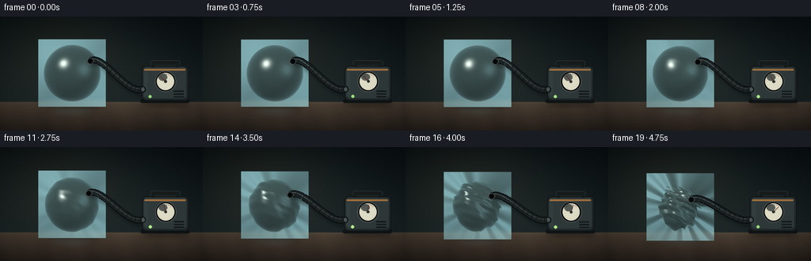
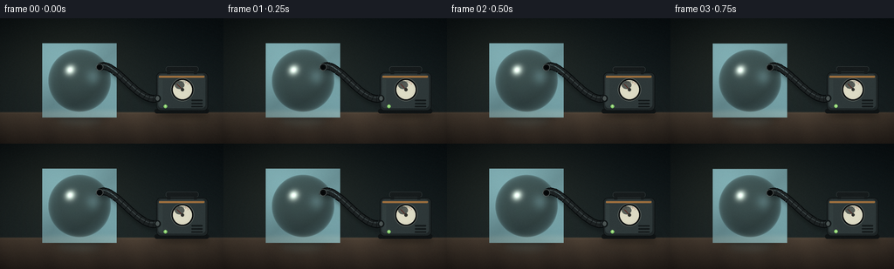

CODING AGENTS AS PIXEL WORLD MODELS
traex/DeepSeek-V4.1-Flash · phygen_018
点击播放 · 原生 RGB 像素
逐轮保存的候选
回放视频、检查图与代码变化。
每份候选均可单独播放。实际图片检查记录在下方工具轨迹中。
候选 01播放与检查图
点击播放 · 原生 RGB 像素

展开代码变化
--- 上一保存版本
+++ 本次保存版本
@@ -0,0 +1,669 @@
+from pathlib import Path
+import math
+
+import numpy as np
+from PIL import Image, ImageDraw, ImageFilter
+
+import artifact_io
+
+
+WIDTH = 256
+HEIGHT = 144
+FRAMES = 20
+FPS = 4.0
+SS = 3
+OW = WIDTH * SS
+OH = HEIGHT * SS
+
+TABLE_Y = 108.0
+BALL_CX = 91.0
+BALL_SCALE = 36.0
+NOZZLE_DIR = np.array([0.64, 0.42, 0.64], dtype=np.float32)
+NOZZLE_DIR /= np.linalg.norm(NOZZLE_DIR)
+
+
+def clamp01(value):
+ return np.clip(value, 0.0, 1.0)
+
+
+def smoothstep(edge0, edge1, value):
+ x = clamp01((value - edge0) / (edge1 - edge0))
+ return x * x * (3.0 - 2.0 * x)
+
+
+def frame_progress(index):
+ u = index / (FRAMES - 1)
+ delayed = clamp01((u - 0.035) / 0.965)
+ return 0.43 * delayed + 0.57 * delayed ** 3
+
+
+def radial_radius(dx, dy, dz, progress):
+ p = float(progress)
+ base = 1.0 - 0.055 * p - 0.115 * p * p
+
+ nozzle_dot = (
+ dx * NOZZLE_DIR[0] + dy * NOZZLE_DIR[1] + dz * NOZZLE_DIR[2]
+ )
+ nozzle_dent = 0.235 * p ** 1.35 * np.exp(
+ -((1.0 - nozzle_dot) / 0.43) ** 2
+ )
+
+ side_dot = dx * -0.78 + dy * 0.18 + dz * 0.60
+ side_dent = 0.075 * p * p * np.exp(-((1.0 - side_dot) / 0.50) ** 2)
+
+ lower_dot = dx * 0.36 + dy * -0.72 + dz * 0.59
+ lower_dent = 0.055 * p ** 2.2 * np.exp(
+ -((1.0 - lower_dot) / 0.46) ** 2
+ )
+
+ wrinkle_a = np.sin(6.3 * dx + 4.8 * dy + 3.1 * dz + 0.55)
+ wrinkle_b = np.sin(11.7 * dy - 7.9 * dz + 3.3 * dx + 1.45)
+ wrinkle_c = np.cos(14.2 * dx + 8.6 * dy - 5.8 * dz + 0.30)
+ wrinkles = 0.047 * p * p * (wrinkle_a + 0.52 * wrinkle_b + 0.32 * wrinkle_c)
+
+ crease = (
+ 0.034
+ * p ** 2.4
+ * np.cos(20.0 * dy + 7.4 * dx - 4.6 * dz + 0.9)
+ * (0.42 + 0.58 * np.abs(dy))
+ )
+
+ return base - nozzle_dent - side_dent - lower_dent + wrinkles + crease
+
+
+def surface_root(x, y, progress, back=False):
+ rho2 = x * x + y * y
+ r = np.ones_like(x, dtype=np.float32)
+ sign = -1.0 if back else 1.0
+
+ for _ in range(9):
+ z = sign * np.sqrt(np.maximum(r * r - rho2, 0.0))
+ inv_r = 1.0 / np.maximum(r, 1e-5)
+ new_r = radial_radius(x * inv_r, y * inv_r, z * inv_r, progress)
+ r = np.maximum(new_r, np.sqrt(rho2) + 1e-5)
+
+ z = sign * np.sqrt(np.maximum(r * r - rho2, 0.0))
+ hit = (r * r > rho2 + 1e-5) & (r > 0.08)
+ return np.stack([x, y, z], axis=-1), r, hit
+
+
+def implicit_surface(points, progress):
+ radius = np.linalg.norm(points, axis=-1)
+ inv_r = 1.0 / np.maximum(radius, 1e-5)
+ shape = radial_radius(
+ points[..., 0] * inv_r,
+ points[..., 1] * inv_r,
+ points[..., 2] * inv_r,
+ progress,
+ )
+ return radius - shape
+
+
+def surface_normals(points, progress):
+ eps = 0.008
+ offsets = np.eye(3, dtype=np.float32) * eps
+ gradient = np.empty_like(points)
+ for axis in range(3):
+ plus = points + offsets[axis]
+ minus = points - offsets[axis]
+ gradient[..., axis] = (
+ implicit_surface(plus, progress) - implicit_surface(minus, progress)
+ ) / (2.0 * eps)
+ length = np.maximum(np.linalg.norm(gradient, axis=-1, keepdims=True), 1e-5)
+ return gradient / length
+
+
+def sample_bilinear(image, x, y):
+ h, w = image.shape[:2]
+ x = np.clip(x, 0.0, w - 1.001)
+ y = np.clip(y, 0.0, h - 1.001)
+ x0 = np.floor(x).astype(np.int32)
+ y0 = np.floor(y).astype(np.int32)
+ x1 = np.minimum(x0 + 1, w - 1)
+ y1 = np.minimum(y0 + 1, h - 1)
+ wx = (x - x0)[..., None]
+ wy = (y - y0)[..., None]
+ top = image[y0, x0] * (1.0 - wx) + image[y0, x1] * wx
+ bottom = image[y1, x0] * (1.0 - wx) + image[y1, x1] * wx
+ return top * (1.0 - wy) + bottom * wy
+
+
+def make_background():
+ yy, xx = np.mgrid[0:OH, 0:OW].astype(np.float32)
+ xn = xx / (OW - 1)
+ yn = yy / (OH - 1)
+
+ top = np.array([0.040, 0.070, 0.082], dtype=np.float32)
+ horizon = np.array([0.135, 0.175, 0.178], dtype=np.float32)
+ image = top[None, None, :] * (1.0 - yn[..., None]) + horizon[None, None, :] * yn[..., None]
+
+ glow = np.exp(-(((xn - 0.31) / 0.38) ** 2 + ((yn - 0.30) / 0.45) ** 2))
+ image += glow[..., None] * np.array([0.060, 0.052, 0.030], dtype=np.float32)
+
+ table_top = TABLE_Y / HEIGHT
+ table_mask = smoothstep(table_top - 0.008, table_top + 0.010, yn)
+ table_t = clamp01((yn - table_top) / (1.0 - table_top))
+ table_near = np.array([0.175, 0.145, 0.122], dtype=np.float32)
+ table_far = np.array([0.315, 0.265, 0.218], dtype=np.float32)
+ table = table_far[None, None, :] * (1.0 - table_t[..., None]) + table_near[None, None, :] * table_t[..., None]
+
+ grain = (
+ 0.010 * np.sin(0.030 * xx + 0.55 * np.sin(0.009 * yy))
+ + 0.006 * np.sin(0.071 * xx - 0.018 * yy)
+ )
+ table += grain[..., None] * np.array([0.8, 0.65, 0.45], dtype=np.float32)
+
+ horizon_light = np.exp(-((yn - table_top) / 0.010) ** 2)
+ table += horizon_light[..., None] * np.array([0.065, 0.050, 0.035], dtype=np.float32)
+ image = image * (1.0 - table_mask[..., None]) + table * table_mask[..., None]
+
+ vignette = 1.0 - 0.36 * clamp01(
+ ((xn - 0.50) / 0.72) ** 2 + ((yn - 0.47) / 0.78) ** 2
+ )
+ image *= vignette[..., None]
+ return np.clip(image, 0.0, 1.0)
+
+
+BACKGROUND = make_background()
+BACKGROUND_PIL = Image.fromarray(np.uint8(BACKGROUND * 255.0), "RGB")
+BACKGROUND_BLUR = np.asarray(
+ BACKGROUND_PIL.filter(ImageFilter.GaussianBlur(2.2 * SS)), dtype=np.float32
+) / 255.0
+
+
+def blend_rgba(base, overlay):
+ base_image = Image.fromarray(np.uint8(np.clip(base, 0.0, 1.0) * 255.0), "RGB")
+ base_image = Image.alpha_composite(base_image.convert("RGBA"), overlay)
+ return np.asarray(base_image.convert("RGB"), dtype=np.float32) / 255.0
+
+
+def draw_soft_shadow(image, center_x, center_y, width, height, opacity, blur):
+ layer = Image.new("L", (OW, OH), 0)
+ draw = ImageDraw.Draw(layer)
+ draw.ellipse(
+ [
+ (center_x - width * 0.5) * SS,
+ (center_y - height * 0.5) * SS,
+ (center_x + width * 0.5) * SS,
+ (center_y + height * 0.5) * SS,
+ ],
+ fill=int(255 * opacity),
+ )
+ layer = layer.filter(ImageFilter.GaussianBlur(blur * SS))
+ mask = np.asarray(layer, dtype=np.float32)[..., None] / 255.0
+ return image * (1.0 - mask)
+
+
+def draw_table_reflections(image, progress):
+ layer = Image.new("RGBA", (OW, OH), (0, 0, 0, 0))
+ draw = ImageDraw.Draw(layer)
+
+ ball_reflection = [
+ (BALL_CX - 29.0) * SS,
+ (TABLE_Y - 1.0) * SS,
+ (BALL_CX + 29.0) * SS,
+ (TABLE_Y + 18.0) * SS,
+ ]
+ draw.ellipse(ball_reflection, fill=(96, 154, 162, int(34 - 8 * progress)))
+
+ pump_reflection = [
+ 179 * SS,
+ (TABLE_Y - 1.0) * SS,
+ 237 * SS,
+ (TABLE_Y + 14.0) * SS,
+ ]
+ draw.ellipse(pump_reflection, fill=(132, 113, 83, 28))
+ layer = layer.filter(ImageFilter.GaussianBlur(5.0 * SS))
+ return blend_rgba(image, layer)
+
+
+def draw_air_wisps(image, attach_x, attach_y, progress):
+ if progress > 0.82:
+ return image
+
+ layer = Image.new("RGBA", (OW, OH), (0, 0, 0, 0))
+ draw = ImageDraw.Draw(layer)
+ alpha_scale = 1.0 - smoothstep(0.45, 0.82, progress)
+ for k in range(7):
+ phase = (k / 7.0 + 0.34 * progress) % 1.0
+ angle = 2.35 + 0.75 * math.sin(k * 2.1 + 0.8)
+ radius = (20.0 - 11.0 * phase) * SS
+ x = attach_x * SS + math.cos(angle) * radius
+ y = attach_y * SS + math.sin(angle) * radius * 0.76
+ dx = (attach_x * SS - x) * 0.16
+ dy = (attach_y * SS - y) * 0.16
+ alpha = int(46 * alpha_scale * (0.35 + 0.65 * phase))
+ draw.line(
+ [(x - dx, y - dy), (x + dx, y + dy)],
+ fill=(176, 226, 232, alpha),
+ width=max(1, int(1.1 * SS)),
+ )
+ layer = layer.filter(ImageFilter.GaussianBlur(0.7 * SS))
+ return blend_rgba(image, layer)
+
+
+def render_ball(image, center_x, center_y, progress):
+ x0 = int((center_x - BALL_SCALE * 1.18) * SS)
+ x1 = int((center_x + BALL_SCALE * 1.18) * SS) + 1
+ y0 = int((center_y - BALL_SCALE * 1.18) * SS)
+ y1 = int((center_y + BALL_SCALE * 1.18) * SS) + 1
+ x0 = max(0, x0)
+ y0 = max(0, y0)
+ x1 = min(OW, x1)
+ y1 = min(OH, y1)
+
+ yy, xx = np.mgrid[y0:y1, x0:x1].astype(np.float32)
+ world_x = (xx - center_x * SS) / (BALL_SCALE * SS)
+ world_y = (center_y * SS - yy) / (BALL_SCALE * SS)
+
+ front_points, front_radius, front_hit = surface_root(
+ world_x, world_y, progress, back=False
+ )
+ back_points, back_radius, back_hit = surface_root(
+ world_x, world_y, progress, back=True
+ )
+ if not np.any(front_hit):
+ return image
+
+ front_normals = surface_normals(front_points, progress)
+ back_normals = surface_normals(back_points, progress)
+
+ view = np.array([0.0, 0.0, 1.0], dtype=np.float32)
+ key = np.array([-0.54, 0.61, 0.58], dtype=np.float32)
+ key /= np.linalg.norm(key)
+ fill = np.array([0.76, 0.22, 0.60], dtype=np.float32)
+ fill /= np.linalg.norm(fill)
+ rim_dir = np.array([0.12, -0.18, 0.98], dtype=np.float32)
+ rim_dir /= np.linalg.norm(rim_dir)
+ half_key = key + view
+ half_key /= np.linalg.norm(half_key)
+ half_fill = fill + view
+ half_fill /= np.linalg.norm(half_fill)
+
+ n_dot_v = clamp01(np.sum(front_normals * view, axis=-1))
+ diff_key = clamp01(np.sum(front_normals * key, axis=-1))
+ diff_fill = clamp01(np.sum(front_normals * fill, axis=-1))
+ diff_rim = clamp01(np.sum(front_normals * rim_dir, axis=-1))
+ spec_key = clamp01(np.sum(front_normals * half_key, axis=-1)) ** 70
+ spec_fill = clamp01(np.sum(front_normals * half_fill, axis=-1)) ** 34
+ fresnel = (1.0 - n_dot_v) ** 2.7
+ rim = (1.0 - n_dot_v) ** 1.55 * diff_rim
+
+ shift_x = (2.4 * front_normals[..., 0] + 0.7 * front_normals[..., 1]) * SS
+ shift_y = (-2.4 * front_normals[..., 1] + 0.5 * front_normals[..., 0]) * SS
+ transmitted = sample_bilinear(
+ BACKGROUND_BLUR, xx + shift_x, yy + shift_y
+ )
+ transmitted *= np.array([0.86, 0.95, 0.98], dtype=np.float32)
+
+ back_diff = clamp01(np.sum(-back_normals * key, axis=-1))
+ back_fresnel = (1.0 - clamp01(np.abs(np.sum(back_normals * view, axis=-1)))) ** 2.0
+
+ tint = np.array([0.52, 0.70, 0.72], dtype=np.float32)
+ glass = transmitted * 0.54
+ glass += tint[None, None, :] * (
+ 0.19 + 0.34 * diff_key[..., None] + 0.12 * diff_fill[..., None]
+ )
+ glass += np.array([0.58, 0.74, 0.76], dtype=np.float32) * (
+ 0.055 * back_diff[..., None] + 0.06 * back_fresnel[..., None]
+ )
+ glass += (
+ spec_key[..., None] * np.array([1.0, 0.98, 0.91], dtype=np.float32) * 1.22
+ + spec_fill[..., None] * np.array([0.60, 0.82, 0.86], dtype=np.float32) * 0.32
+ )
+ glass += fresnel[..., None] * np.array([0.56, 0.78, 0.82], dtype=np.float32) * 0.38
+ glass += rim[..., None] * np.array([0.50, 0.78, 0.82], dtype=np.float32) * 0.24
+
+ alpha = clamp01(0.53 + 0.37 * fresnel + 0.07 * spec_key + 0.04 * back_fresnel)
+ alpha = alpha[..., None]
+
+ bg_crop = image[y0:y1, x0:x1]
+ composited = bg_crop * (1.0 - alpha) + np.clip(glass, 0.0, 1.6) * alpha
+ hit_mask = front_hit[..., None]
+ image[y0:y1, x0:x1] = np.where(hit_mask, composited, bg_crop)
+ return image
+
+
+def cubic_bezier(p0, p1, p2, p3, t):
+ u = 1.0 - t
+ return (
+ (u ** 3) * p0
+ + 3.0 * (u ** 2) * t * p1
+ + 3.0 * u * (t ** 2) * p2
+ + (t ** 3) * p3
+ )
+
+
+def draw_hose(image, p0, p3, progress, vibration):
+ points = []
+ p1 = np.array([p0[0] + 15.0, p0[1] - 10.5], dtype=np.float32)
+ p2 = np.array([159.0 + vibration[0] * 0.35, 98.0], dtype=np.float32)
+ p3 = np.array([p3[0] + vibration[0], p3[1] + vibration[1]], dtype=np.float32)
+ for t in np.linspace(0.0, 1.0, 70):
+ points.append(tuple(cubic_bezier(p0, p1, p2, p3, float(t)) * SS))
+
+ shadow_layer = Image.new("RGBA", (OW, OH), (0, 0, 0, 0))
+ shadow_draw = ImageDraw.Draw(shadow_layer)
+ shadow_points = [(x + 1.5 * SS, y + 4.0 * SS) for x, y in points]
+ shadow_draw.line(
+ shadow_points,
+ fill=(3, 7, 8, 90),
+ width=int(8.2 * SS),
+ joint="curve",
+ )
+ shadow_layer = shadow_layer.filter(ImageFilter.GaussianBlur(2.2 * SS))
+ image = blend_rgba(image, shadow_layer)
+
+ layer = Image.new("RGBA", (OW, OH), (0, 0, 0, 0))
+ draw = ImageDraw.Draw(layer)
+ draw.line(points, fill=(7, 10, 11, 255), width=int(9.0 * SS), joint="curve")
+ draw.line(points, fill=(28, 33, 34, 255), width=int(7.2 * SS), joint="curve")
+
+ highlight_points = [(x - 1.1 * SS, y - 1.5 * SS) for x, y in points]
+ draw.line(
+ highlight_points,
+ fill=(80, 91, 92, 155),
+ width=max(1, int(1.15 * SS)),
+ joint="curve",
+ )
+
+ for idx in range(5, len(points) - 2, 5):
+ x, y = points[idx]
+ x_prev, y_prev = points[idx - 1]
+ tangent = np.array([x - x_prev, y - y_prev], dtype=np.float32)
+ length = max(float(np.linalg.norm(tangent)), 1e-5)
+ normal = np.array([-tangent[1], tangent[0]], dtype=np.float32) / length
+ half = 3.25 * SS
+ draw.line(
+ [
+ (x - normal[0] * half, y - normal[1] * half),
+ (x + normal[0] * half, y + normal[1] * half),
+ ],
+ fill=(12, 15, 16, 190),
+ width=max(1, int(0.8 * SS)),
+ )
+
+ return blend_rgba(image, layer)
+
+
+def draw_nozzle(image, attach, tangent):
+ layer = Image.new("RGBA", (OW, OH), (0, 0, 0, 0))
+ draw = ImageDraw.Draw(layer)
+ cx, cy = attach[0] * SS, attach[1] * SS
+ angle = math.atan2(tangent[1], tangent[0])
+ length = 3.0 * SS
+ width = 3.7 * SS
+ dx = math.cos(angle) * length
+ dy = math.sin(angle) * length
+ nx = -math.sin(angle) * width
+ ny = math.cos(angle) * width
+ polygon = [
+ (cx - dx + nx, cy - dy + ny),
+ (cx + dx + nx, cy + dy + ny),
+ (cx + dx - nx, cy + dy - ny),
+ (cx - dx - nx, cy - dy - ny),
+ ]
+ draw.polygon(polygon, fill=(42, 48, 49, 255))
+ draw.line(
+ [(cx - dx, cy - dy), (cx + dx, cy + dy)],
+ fill=(128, 137, 132, 220),
+ width=max(1, int(1.2 * SS)),
+ )
+ draw.ellipse(
+ [cx - 4.0 * SS, cy - 4.0 * SS, cx + 4.0 * SS, cy + 4.0 * SS],
+ fill=(12, 15, 16, 255),
+ outline=(87, 94, 92, 255),
+ width=max(1, int(0.9 * SS)),
+ )
+ draw.ellipse(
+ [cx - 2.2 * SS, cy - 2.2 * SS, cx + 2.2 * SS, cy + 2.2 * SS],
+ fill=(4, 6, 7, 255),
+ )
+ return blend_rgba(image, layer)
+
+
+def draw_pump(image, progress, vibration):
+ dx, dy = vibration
+ layer = Image.new("RGBA", (OW, OH), (0, 0, 0, 0))
+ draw = ImageDraw.Draw(layer)
+
+ def box(x0, y0, x1, y1):
+ return [
+ (x0 + dx) * SS,
+ (y0 + dy) * SS,
+ (x1 + dx) * SS,
+ (y1 + dy) * SS,
+ ]
+
+ draw.rounded_rectangle(
+ box(177.0, 104.0, 239.0, 109.0),
+ radius=2.2 * SS,
+ fill=(16, 20, 21, 255),
+ )
+ draw.rounded_rectangle(
+ box(179.0, 62.0, 238.0, 106.0),
+ radius=5.2 * SS,
+ fill=(31, 38, 39, 255),
+ outline=(12, 16, 17, 255),
+ width=max(1, int(0.8 * SS)),
+ )
+ draw.rounded_rectangle(
+ box(181.0, 64.0, 235.0, 103.0),
+ radius=4.2 * SS,
+ fill=(47, 57, 58, 255),
+ )
+ draw.rounded_rectangle(
+ box(182.0, 66.0, 234.0, 68.0),
+ radius=0.8 * SS,
+ fill=(178, 124, 67, 225),
+ )
+ draw.rounded_rectangle(
+ box(182.0, 70.0, 186.0, 100.0),
+ radius=1.2 * SS,
+ fill=(69, 82, 82, 150),
+ )
+
+ draw.rounded_rectangle(
+ box(190.0, 55.5, 227.0, 61.5),
+ radius=2.5 * SS,
+ fill=(22, 27, 28, 255),
+ outline=(70, 78, 78, 255),
+ width=max(1, int(0.6 * SS)),
+ )
+ draw.rectangle(box(191.5, 61.0, 195.0, 64.0), fill=(22, 27, 28, 255))
+ draw.rectangle(box(222.0, 61.0, 225.5, 64.0), fill=(22, 27, 28, 255))
+
+ draw.ellipse(box(177.0, 88.0, 184.0, 96.0), fill=(18, 23, 24, 255))
+ draw.ellipse(box(178.5, 89.5, 182.5, 94.5), fill=(75, 84, 83, 255))
+
+ for i, y in enumerate([93.5, 97.0, 100.5]):
+ draw.rounded_rectangle(
+ box(219.0, y, 232.0, y + 1.5),
+ radius=0.7 * SS,
+ fill=(20, 25, 26, 180),
+ )
+
+ led = clamp01(0.42 + 0.58 * math.sin(math.pi * progress))
+ led_color = (
+ int(98 + 70 * led),
+ int(184 + 48 * led),
+ int(89 + 35 * led),
+ 255,
+ )
+ draw.ellipse(box(187.5, 99.0, 191.5, 103.0), fill=led_color)
+ draw.ellipse(box(188.7, 100.0, 190.3, 101.6), fill=(220, 255, 179, 230))
+
+ gauge_cx = 209.0 + dx
+ gauge_cy = 82.0 + dy
+ gauge_r = 13.2
+ draw.ellipse(
+ [
+ (gauge_cx - gauge_r) * SS,
+ (gauge_cy - gauge_r) * SS,
+ (gauge_cx + gauge_r) * SS,
+ (gauge_cy + gauge_r) * SS,
+ ],
+ fill=(12, 15, 16, 255),
+ outline=(93, 100, 96, 255),
+ width=max(1, int(0.85 * SS)),
+ )
+ draw.ellipse(
+ [
+ (gauge_cx - 10.8) * SS,
+ (gauge_cy - 10.8) * SS,
+ (gauge_cx + 10.8) * SS,
+ (gauge_cy + 10.8) * SS,
+ ],
+ fill=(218, 214, 192, 255),
+ )
+ draw.ellipse(
+ [
+ (gauge_cx - 8.8) * SS,
+ (gauge_cy - 9.8) * SS,
+ (gauge_cx + 2.0) * SS,
+ (gauge_cy - 1.0) * SS,
+ ],
+ fill=(240, 237, 215, 72),
+ )
+
+ for tick in range(11):
+ frac = tick / 10.0
+ angle = math.radians(-135.0 + 90.0 * frac)
+ inner = 8.3 if tick % 2 == 0 else 9.1
+ outer = 10.2
+ color = (147, 52, 40, 255) if frac > 0.78 else (42, 45, 42, 255)
+ width = max(1, int((0.55 if tick % 2 == 0 else 0.35) * SS))
+ draw.line(
+ [
+ (
+ (gauge_cx + math.cos(angle) * inner) * SS,
+ (gauge_cy + math.sin(angle) * inner) * SS,
+ ),
+ (
+ (gauge_cx + math.cos(angle) * outer) * SS,
+ (gauge_cy + math.sin(angle) * outer) * SS,
+ ),
+ ],
+ fill=color,
+ width=width,
+ )
+
+ needle_angle = math.radians(-135.0 + 90.0 * progress)
+ draw.line(
+ [
+ (gauge_cx * SS, gauge_cy * SS),
+ (
+ (gauge_cx + math.cos(needle_angle) * 8.5) * SS,
+ (gauge_cy + math.sin(needle_angle) * 8.5) * SS,
+ ),
+ ],
+ fill=(91, 28, 23, 255),
+ width=max(1, int(0.9 * SS)),
+ )
+ draw.ellipse(
+ [
+ (gauge_cx - 1.7) * SS,
+ (gauge_cy - 1.7) * SS,
+ (gauge_cx + 1.7) * SS,
+ (gauge_cy + 1.7) * SS,
+ ],
+ fill=(42, 42, 38, 255),
+ )
+ return blend_rgba(image, layer)
+
+
+def render_frame(index):
+ progress = frame_progress(index)
+ vibration_phase = 2.0 * math.pi * (0.37 * index + 0.11 * index * index)
+ active = smoothstep(0.01, 0.12, progress)
+ vibration = (
+ active * 0.32 * math.sin(vibration_phase),
+ active * 0.12 * math.cos(vibration_phase * 1.7),
+ )
+
+ bottom_radius = radial_radius(
+ 0.0, -1.0, 0.0, progress
+ )
+ center_y = TABLE_Y - BALL_SCALE * float(bottom_radius) - 0.6
+
+ image = BACKGROUND.copy()
+ image = draw_table_reflections(image, progress)
+
+ image = draw_soft_shadow(
+ image,
+ BALL_CX + 3.0,
+ TABLE_Y + 1.8,
+ BALL_SCALE * 2.02 * float(bottom_radius),
+ 11.0,
+ 0.47,
+ 4.0,
+ )
+ image = draw_soft_shadow(
+ image,
+ 209.0 + vibration[0],
+ TABLE_Y + 2.0,
+ 62.0,
+ 8.5,
+ 0.42,
+ 4.0,
+ )
+
+ image = render_ball(image, BALL_CX, center_y, progress)
+
+ attach_radius = radial_radius(
+ NOZZLE_DIR[0], NOZZLE_DIR[1], NOZZLE_DIR[2], progress
+ )
+ attach = np.array(
+ [
+ BALL_CX + BALL_SCALE * float(attach_radius) * NOZZLE_DIR[0],
+ center_y - BALL_SCALE * float(attach_radius) * NOZZLE_DIR[1],
+ ],
+ dtype=np.float32,
+ )
+ image = draw_air_wisps(image, attach[0], attach[1], progress)
+
+ pump_port = np.array([179.0, 92.0], dtype=np.float32)
+ image = draw_hose(image, attach, pump_port, progress, vibration)
+ tangent = pump_port - attach
+ tangent /= max(float(np.linalg.norm(tangent)), 1e-5)
+ image = draw_nozzle(image, attach, tangent)
+ image = draw_pump(image, progress, vibration)
+
+ yy, xx = np.mgrid[0:OH, 0:OW].astype(np.float32)
+ vignette = 1.0 - 0.12 * clamp01(
+ ((xx / OW - 0.50) / 0.72) ** 2 + ((yy / OH - 0.50) / 0.82) ** 2
+ )
+ image *= vignette[..., None]
+
+ luminance = np.max(image, axis=-1)
+ bloom_source = np.clip((luminance - 0.74) / 0.26, 0.0, 1.0)
+ bloom_image = Image.fromarray(np.uint8(bloom_source * 255.0), "L")
+ bloom_image = bloom_image.filter(ImageFilter.GaussianBlur(2.2 * SS))
+ bloom = np.asarray(bloom_image, dtype=np.float32)[..., None] / 255.0
+ image += bloom * np.array([0.10, 0.12, 0.11], dtype=np.float32)
+
+ rng = np.random.default_rng(8107 + index)
+ grain = rng.normal(0.0, 0.0065, (OH, OW, 1)).astype(np.float32)
+ image += grain
+ image = np.clip(image, 0.0, 1.0)
+
+ frame = Image.fromarray(np.uint8(image * 255.0 + 0.5), "RGB")
+ frame = frame.resize((WIDTH, HEIGHT), Image.Resampling.LANCZOS)
+ return np.asarray(frame, dtype=np.uint8)
+
+
+def main():
+ frames = np.stack([render_frame(index) for index in range(FRAMES)], axis=0)
+ artifact_io.save(frames, Path(__file__).resolve().parent)
+ print(
+ "Generated",
+ frames.shape,
+ "RGB frames at",
+ FPS,
+ "fps in",
+ Path(__file__).resolve().parent,
+ )
+
+
+if __name__ == "__main__":
+ main()
候选 02播放与检查图
点击播放 · 原生 RGB 像素


展开代码变化
--- 上一保存版本
+++ 本次保存版本
@@ -165,14 +165,14 @@
BACKGROUND = make_background()
-BACKGROUND_PIL = Image.fromarray(np.uint8(BACKGROUND * 255.0), "RGB")
+BACKGROUND_PIL = Image.fromarray(np.uint8(BACKGROUND * 255.0))
BACKGROUND_BLUR = np.asarray(
BACKGROUND_PIL.filter(ImageFilter.GaussianBlur(2.2 * SS)), dtype=np.float32
) / 255.0
def blend_rgba(base, overlay):
- base_image = Image.fromarray(np.uint8(np.clip(base, 0.0, 1.0) * 255.0), "RGB")
+ base_image = Image.fromarray(np.uint8(np.clip(base, 0.0, 1.0) * 255.0))
base_image = Image.alpha_composite(base_image.convert("RGBA"), overlay)
return np.asarray(base_image.convert("RGB"), dtype=np.float32) / 255.0
@@ -637,7 +637,7 @@
luminance = np.max(image, axis=-1)
bloom_source = np.clip((luminance - 0.74) / 0.26, 0.0, 1.0)
- bloom_image = Image.fromarray(np.uint8(bloom_source * 255.0), "L")
+ bloom_image = Image.fromarray(np.uint8(bloom_source * 255.0))
bloom_image = bloom_image.filter(ImageFilter.GaussianBlur(2.2 * SS))
bloom = np.asarray(bloom_image, dtype=np.float32)[..., None] / 255.0
image += bloom * np.array([0.10, 0.12, 0.11], dtype=np.float32)
@@ -647,7 +647,7 @@
image += grain
image = np.clip(image, 0.0, 1.0)
- frame = Image.fromarray(np.uint8(image * 255.0 + 0.5), "RGB")
+ frame = Image.fromarray(np.uint8(image * 255.0 + 0.5))
frame = frame.resize((WIDTH, HEIGHT), Image.Resampling.LANCZOS)
return np.asarray(frame, dtype=np.uint8)
可观测工具轨迹
实际执行的命令与返回图片。
命令 1exit 0
/bin/bash -c "pwd && rg --files -g '"'!*__pycache__*'"' -g '"'!*.pyc'"'"
命令 2exit 0
/bin/bash -c "sed -n '1,240p' GENERATION_RULES.md"
命令 3exit 0
/bin/bash -c "sed -n '1,260p' prompt.txt && printf '\\n--- TASK SPEC ---\\n' && sed -n '1,320p' task_spec.json"
命令 4exit 0
/bin/bash -c "sed -n '1,320p' artifact_io.py"
命令 5exit 0
/bin/bash -c "sed -n '1,260p' player_template.html"
命令 6exit 0
/bin/bash -c "python - <<'PY' import importlib.util for m in ['numpy','PIL','cv2','imageio','matplotlib','scipy']: print(m, bool(importlib.util.find_spec(m))) PY"
命令 7exit 0
/bin/bash -c 'python generate.py'
命令 8exit 0
/bin/bash -c 'command -v chafa || true; command -v viu || true; command -v jp2 || true; command -v img2txt || true; command -v convert || true'
命令 9exit 0
/bin/bash -c "python - <<'PY'
from PIL import Image
import numpy as np
for name in ['frames/00.png','frames/10.png','frames/19.png','inspection.png','transition_check.png']:
im=Image.open(name).convert('RGB'); a=np.asarray(im)
print(name, im.size, 'mean', a.mean((0,1)).round(1), 'std', a.std((0,1)).round(1), 'minmax', (a.min(),a.max()))
PY"命令 10exit 0
/bin/bash -c "python - <<'PY'
from PIL import Image, ImageOps
import numpy as np
chars=' .:-=+*#%@'
for idx in [0,5,10,15,19]:
im=Image.open(f'frames/{idx:02d}.png').convert('L').resize((96,36),Image.Resampling.LANCZOS)
a=np.asarray(im,dtype=float)
a=(a-a.min())/(a.max()-a.min()+1e-6)
print('\\nFRAME',idx)
for row in a:
print(''.join(chars[min(len(chars)-1,int(v*(len(chars)-1)+.5))] for v in row))
PY"命令 11exit 0
/bin/bash -c "python - <<'PY'
from PIL import Image
import numpy as np
from scipy import ndimage
frames=np.stack([np.asarray(Image.open(f'frames/{i:02d}.png').convert('RGB'),dtype=np.float32) for i in range(20)])
# Difference from first and consecutive; report ball crop and full-frame energy.
for i in [1,4,8,12,16,19]:
d=np.abs(frames[i]-frames[0]).mean(2)
dc=np.abs(frames[i]-frames[max(i-1,0)]).mean(2)
print(i,'from0 mean/max/p99',round(float(d.mean()),2),round(float(d.max()),2),round(float(np.percentile(d,99)),2),'ball',round(float(d[40:112,20:155].mean()),2),'consec',round(float(dc.mean()),2))
# bounding boxes of significant difference from frame0
for i in [4,10,19]:
d=np.abs(frames[i]-frames[0]).mean(2)>8
ys,xs=np.where(d)
print('bbox',i,(xs.min(),ys.min(),xs.max(),ys.max()),'pixels',len(xs))
# per-row span of differences in ball neighborhood
for i in [0,5,10,15,19]:
a=frames[i]
# chroma silhouette: ball cyan edges vs background, detect pixels with blue-green > red + 8 and lum > 30 in left area
m=(a[:,:,1]>a[:,:,0]+7)&(a[:,:,2]>a[:,:,0]+4)&(np.arange(256)[None,:]<170)&(np.arange(256)[None,:]>15)&(np.arange(144)[:,None]>35)&(np.arange(144)[:,None]<115)
ys,xs=np.where(m)
print('cyan bbox',i,(xs.min(),ys.min(),xs.max(),ys.max()),len(xs))
PY"命令 12exit 0
/bin/bash -c "python - <<'PY'
from pathlib import Path
import json, numpy as np
from PIL import Image
case=Path('.')
spec=json.loads((case/'task_spec.json').read_text())
files=['pixels.npz','index.html','inspection.png','transition_check.png']
print('spec',spec)
print('artifacts', {f:(case/f).is_file() for f in files})
z=np.load(case/'pixels.npz')['pixels']
print('pixels',z.shape,z.dtype,'range',int(z.min()),int(z.max()))
frames=np.stack([np.asarray(Image.open(case/'frames'/f'{i:02d}.png').convert('RGB')) for i in range(spec['frames'])])
print('frames',frames.shape,frames.dtype,'unique frame hashes',len({f.tobytes() for f in frames}))
print('index size', (case/'index.html').stat().st_size)
assert z.shape==(spec['height'],spec['width'],spec['frames'])
assert frames.shape==(spec['frames'],spec['height'],spec['width'],3)
print('CONTRACT OK')
PY"命令 13exit 0
/bin/bash -c "python - <<'PY'
import generate, numpy as np
for p in [0,0.25,0.5,0.75,1.0]:
print('\\np',p)
for name,d in [('right',(1,0,0)),('upper-right',tuple(generate.NOZZLE_DIR)),('top',(0,1,0)),('bottom',(0,-1,0)),('left',(-1,0,0)),('front',(0,0,1))]:
print(name,round(float(generate.radial_radius(*d,p)),3),end=' ')
print()
PY"命令 14exit 0
/bin/bash -c "python generate.py && python - <<'PY'
from pathlib import Path
import numpy as np, json
from PIL import Image
p=Path('.')
z=np.load(p/'pixels.npz')['pixels']
print('shape',z.shape,'frames',len(list((p/'frames').glob('*.png'))),'player', (p/'index.html').stat().st_size)
assert z.shape==(144,256,20)
PY"命令 15exit 0
/bin/bash -c "python generate.py && python - <<'PY'
from pathlib import Path
import json
import numpy as np
from PIL import Image
root = Path('.')
spec = json.loads((root / 'task_spec.json').read_text())
pixels = np.load(root / 'pixels.npz')['pixels']
files = sorted((root / 'frames').glob('*.png'))
assert pixels.shape == (spec['height'], spec['width'], spec['frames'])
assert pixels.dtype == np.uint32
assert len(files) == spec['frames']
assert all(Image.open(path).size == (spec['width'], spec['height']) for path in files)
assert (root / 'index.html').is_file()
assert (root / 'inspection.png').is_file()
print(f'final verification: {len(files)} RGB frames, {spec[\"width\"]}x{spec[\"height\"]}, {spec[\"fps\"]} fps, player ready')
PY"命令 16exit 0
/bin/bash -c 'git status --short 2>/dev/null || true; du -h pixels.npz index.html generate.py inspection.png transition_check.png'
保存候选 2 份；完成命令 16 次；可验证图片返回 0 张。原始 API 响应与完整日志保留在本地。